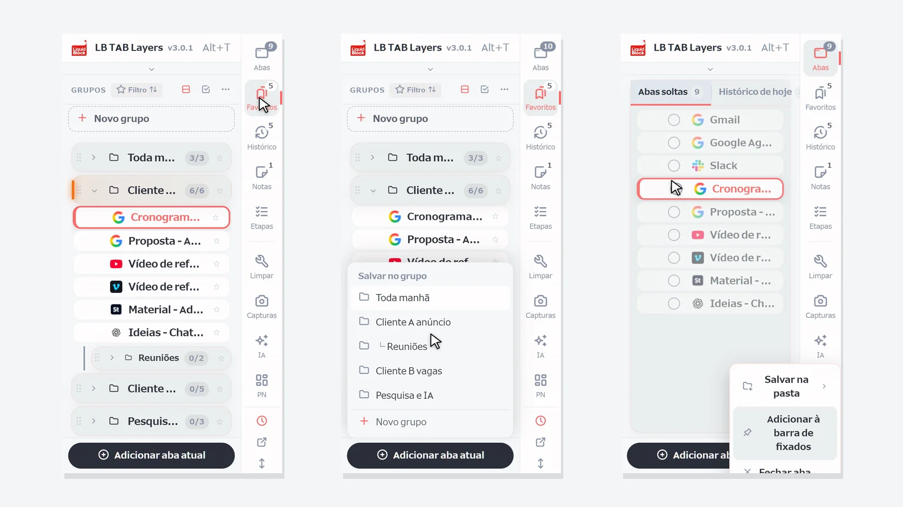
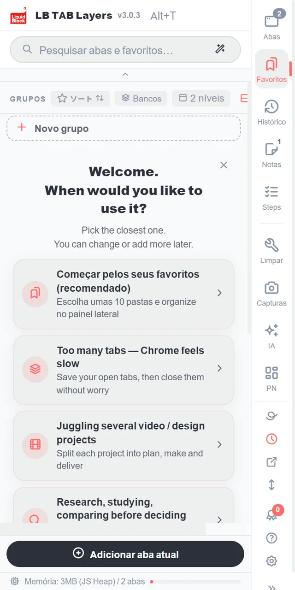
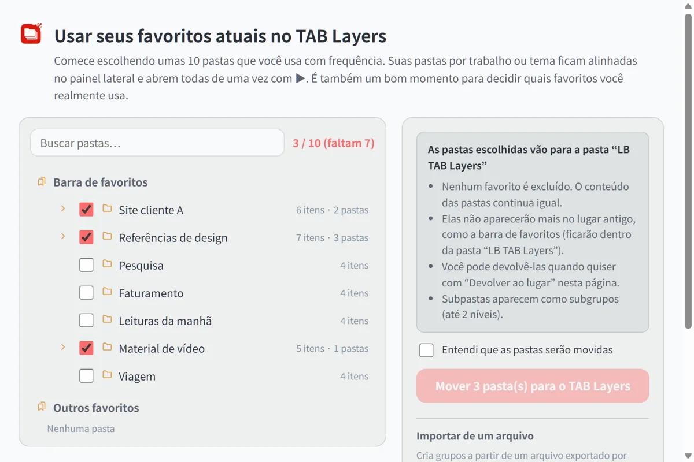
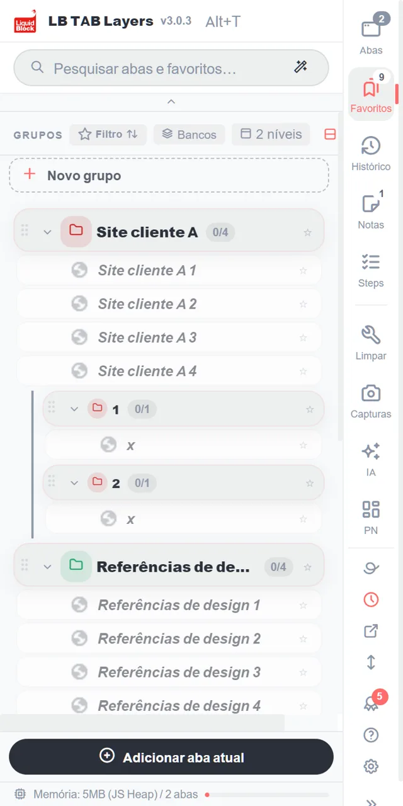
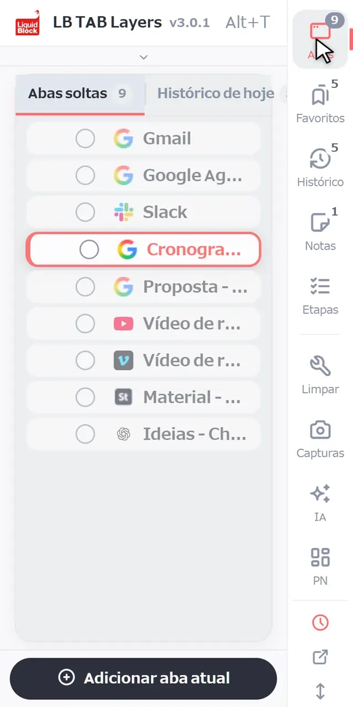
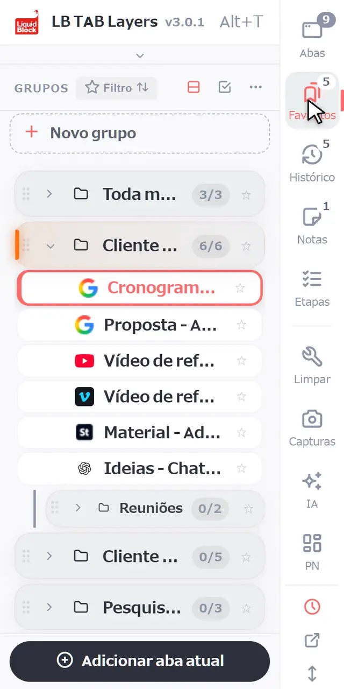
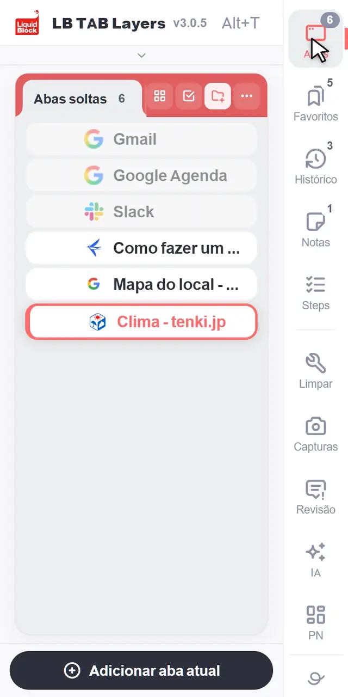
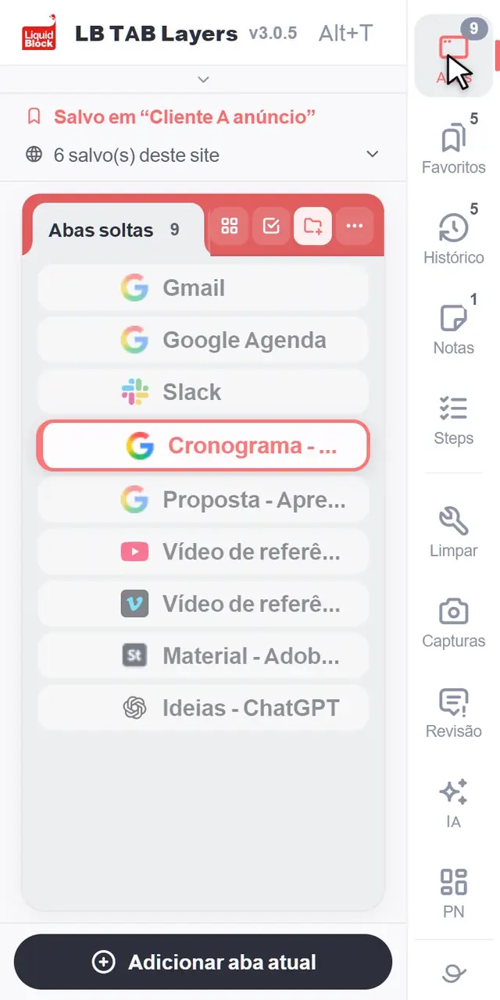

Pressione Alt+T (Option+T no Mac) para abrir o LB TAB Layers. No começo, você só precisa aprender três coisas: salvar a aba em que está com Adicionar aba atual, abrir um grupo inteiro com ▶ e fechar tudo de novo com ■. Tudo o que você salva fica guardado como favoritos do Chrome, então continua lá mesmo depois de fechar as abas ou reiniciar o Chrome.
Obrigado por instalar o LB TAB Layers. Esta página traz só o que você precisa nos primeiros cinco minutos.
A ideia é simples. Abas são o “agora”: aquilo em que você está trabalhando. Favoritos são o “depois”: aquilo a que você vai voltar. O histórico de hoje é o “registro” do que você viu. Com o LB TAB Layers, você passa de um para o outro em um único painel lateral.
💡 Pressione Alt+T (Option+T no Mac) para abrir quando quiser. Você também pode clicar no ícone do LB TAB Layers na barra de ferramentas. Se não estiver vendo o ícone, clique no ícone de peça de quebra-cabeça e fixe o LB TAB Layers.
Primeiro: traga seus favoritos atuais para o TAB Layers (recomendado)
Se você já tem pastas de favoritos no Chrome, trazê-las primeiro para o TAB Layers é o jeito mais rápido de começar. Não é preciso criar grupos novos: suas pastas viram grupos por trabalho ou por tema, organizados no painel lateral.
Clique em “Começar pelos seus favoritos (recomendado)”
Fica no topo da tela de boas-vindas que aparece logo após a instalação. Você também pode abrir depois em Configurações → Dados → Favoritos, ou em “Importar favoritos” no topo do painel grande.

Escolha as pastas que você mais usa (umas 10 para começar)
Suas pastas de favoritos do Chrome aparecem em uma lista. Marque as que você usa com frequência. Um contador como “3 / 10” mostra quantas você escolheu. Não precisa escolher todas: é também uma boa chance de pensar em quais favoritos você realmente usa.

Marque “Entendi que as pastas serão movidas” e mova
As pastas vão para a pasta “LB TAB Layers” dentro dos favoritos do Chrome. Nada é apagado e o conteúdo continua o mesmo. Elas deixam de aparecer no lugar antigo (como a barra de favoritos), mas você pode trazê-las de volta quando quiser com “Devolver ao lugar” na mesma página.
Elas aparecem como grupos no painel lateral
Cada pasta vira um grupo, e as pastas de dentro viram subgrupos. Clique no ▶ de um grupo para abrir todas as páginas dele de uma vez.

1. Conhecendo a tela
Na borda do painel há uma coluna de botões: Abas, Favoritos, Histórico, Notas e Etapas. Clique em um deles para mudar para essa tela. Os números pequenos mostram, por exemplo, quantas abas estão abertas e quantos grupos você tem.
- Abas — as abas abertas agora que ainda não foram salvas em lugar nenhum
- Favoritos — as abas que você salvou, reunidas em grupos, um por projeto
- Histórico — as páginas que você visitou hoje, inclusive as que não salvou
- Notas e Etapas — anotações do seu trabalho e checklists para seguir passo a passo
Abaixo da linha divisória ficam as ferramentas. No primeiro dia, você não precisa delas.

2. O básico
Crie um grupo
Na tela Favoritos, clique em + Novo grupo no topo da lista. Dê a ele o nome de um trabalho, como “Cliente C site” ou “Toda manhã”. O que funciona melhor é um grupo para cada projeto.

Salve a aba em que você está
Clique em Adicionar aba atual, na parte de baixo do painel, e escolha um grupo. Os grupos que já têm a página aparecem marcados como Salvo.

Salve várias abas abertas de uma vez
Na tela Abas, clique no círculo à esquerda de uma aba para começar a seleção. Clique nos círculos das outras abas que quiser, depois em Para grupo, na parte de baixo, e escolha um grupo. Você também pode arrastar as abas para um grupo, uma de cada vez.

Abra tudo com ▶, feche tudo com ■
Passe o mouse sobre um grupo e clique em ▶ para abrir todas as abas dele. Elas abrem juntas como um grupo de abas do Chrome, com o mesmo nome e a mesma cor do seu grupo. Quando terminar, clique em ■ para fechar esse grupo de abas de uma vez. Suas abas continuam salvas.

Pesquise
Digite na caixa de pesquisa no topo para procurar ao mesmo tempo nas suas abas abertas, nas abas salvas e no histórico de hoje. Pequenos erros de digitação não atrapalham.

3. Um jeito simples de organizar seu trabalho
Um grupo para cada projeto
Pense em um grupo como uma mesa de trabalho para uma única tarefa. Dá para levar o dia inteiro assim:
- De manhã — clique em ▶ no projeto de hoje e continue de onde parou
- Quando mudar de tarefa — feche o projeto atual com ■ e abra o próximo com ▶
- No fim do dia — é só clicar em ■. Amanhã, o ▶ traz tudo de volta
Os sites que você usa todo dia, na barra de fixados
Para os sites que você abre todos os dias, como o e-mail ou a agenda, clique com o botão direito em uma aba ou um favorito e escolha Adicionar à barra de fixados. Eles ficam como ícones pequenos no topo do painel e abrem com um clique (até 12). Você também pode arrastá-los até lá.

Uma janela para cada projeto
Clique com o botão direito em um grupo e escolha Abrir em nova janela para abri-lo como grupo de abas em outra janela. É útil quando você trabalha em duas coisas lado a lado ou usa um segundo monitor.
Esqueceu de salvar algo? Está no histórico de hoje
Você não precisa salvar tudo. As páginas que você não salvou continuam no Histórico, na ordem em que você as visitou hoje. Salve o que importa em um grupo e feche o resto; normalmente, isso basta.
🔒 Tudo o que você salva fica guardado como favoritos do Chrome. Suas abas salvas continuam lá depois que você as fecha ou reinicia o Chrome, e o LB TAB Layers não envia seus favoritos para lugar nenhum. Os dados guardados dentro da extensão, como as notas, podem ser exportados em Configurações.
Veja mais dez ações no guia (em inglês).
Perguntas frequentes
Q. Como abro o LB TAB Layers?
Pressione Alt+T no teclado (Option+T no Mac). Você também pode clicar no ícone do LB TAB Layers na barra de ferramentas.
Q. Se eu desinstalar a extensão, minhas abas salvas somem?
Não. As abas salvas continuam nos seus favoritos do Chrome, em pastas com os mesmos nomes dos seus grupos. Os dados guardados dentro da extensão, como as notas, são apagados, então exporte-os antes em Configurações.
Q. Onde a caixa de pesquisa procura?
Nas suas abas abertas, nas abas salvas nos seus grupos e no histórico de hoje, tudo de uma vez.
Q. É grátis?
Sim. A versão gratuita permite criar até 5 grupos. Histórico de hoje, Etapas, o painel e a pesquisa com IA são recursos PRO, e todos os recursos ficam disponíveis por 90 dias após a instalação.
Comece com um projeto.
Abra com Alt+T, salve a aba em que você está, abra com ▶ e feche com ■. Sem conta · Salvo como favoritos do Chrome · Todos os recursos grátis por 90 dias
Adicionar ao Chrome grátis →